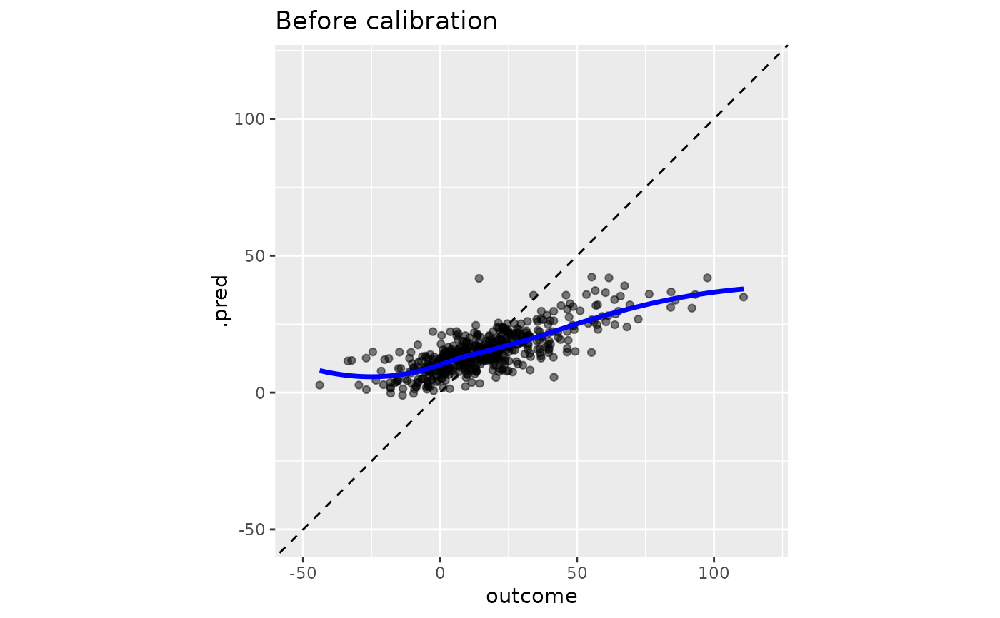
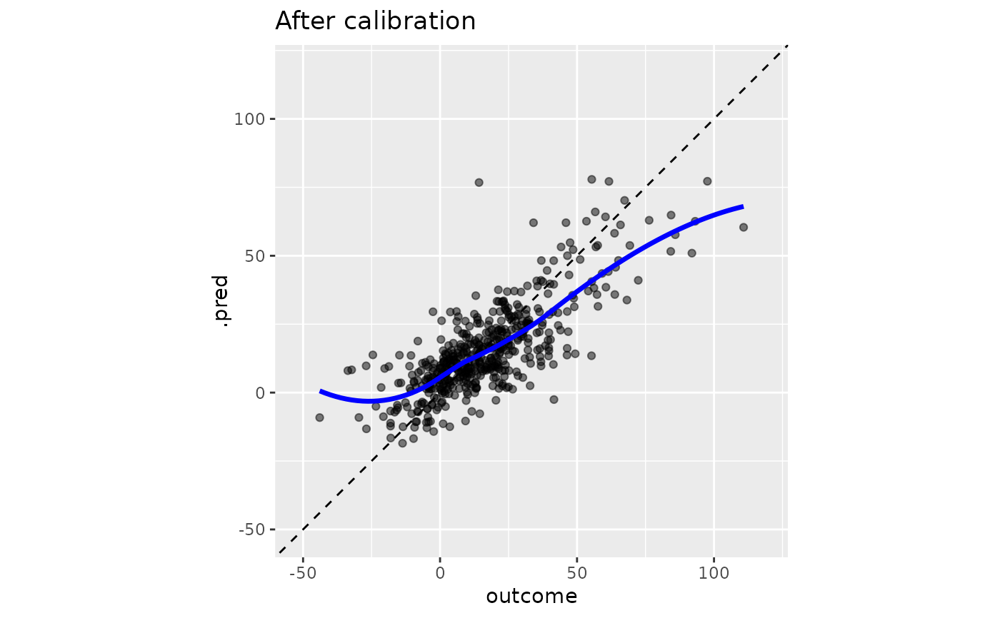

Uses a linear regression model to calibrate numeric predictions
Source:R/cal-estimate-linear.R
cal_estimate_linear.RdUses a linear regression model to calibrate numeric predictions
Usage
cal_estimate_linear(
.data,
truth = NULL,
estimate = dplyr::matches("^.pred$"),
smooth = TRUE,
parameters = NULL,
...,
.by = NULL
)
# S3 method for class 'data.frame'
cal_estimate_linear(
.data,
truth = NULL,
estimate = dplyr::matches("^.pred$"),
smooth = TRUE,
parameters = NULL,
...,
.by = NULL
)
# S3 method for class 'tune_results'
cal_estimate_linear(
.data,
truth = NULL,
estimate = dplyr::matches("^.pred$"),
smooth = TRUE,
parameters = NULL,
...
)
# S3 method for class 'grouped_df'
cal_estimate_linear(
.data,
truth = NULL,
estimate = NULL,
smooth = TRUE,
parameters = NULL,
...
)Arguments
- .data
Am ungrouped
data.frameobject, ortune_resultsobject, that contains a prediction column.- truth
The column identifier for the observed outcome data (that is numeric). This should be an unquoted column name.
- estimate
Column identifier for the predicted values
- smooth
Applies to the linear models. It switches between a generalized additive model using spline terms when
TRUE, and simple linear regression whenFALSE.- parameters
(Optional) An optional tibble of tuning parameter values that can be used to filter the predicted values before processing. Applies only to
tune_resultsobjects.- ...
Additional arguments passed to the models or routines used to calculate the new predictions.
- .by
The column identifier for the grouping variable. This should be a single unquoted column name that selects a qualitative variable for grouping. Default to
NULL. When.by = NULLno grouping will take place.
Details
This function uses existing modeling functions from other packages to create the calibration:
stats::glm()is used whensmoothis set toFALSEmgcv::gam()is used whensmoothis set toTRUE
These methods estimate the relationship in the unmodified predicted values
and then remove that trend when cal_apply() is invoked.
Examples
library(dplyr)
library(ggplot2)
head(boosting_predictions_test)
#> # A tibble: 6 × 2
#> outcome .pred
#> <dbl> <dbl>
#> 1 -4.65 4.12
#> 2 1.12 1.83
#> 3 14.7 13.1
#> 4 36.3 19.1
#> 5 14.1 14.9
#> 6 -4.22 8.10
# ------------------------------------------------------------------------------
# Before calibration
y_rng <- extendrange(boosting_predictions_test$outcome)
boosting_predictions_test %>%
ggplot(aes(outcome, .pred)) +
geom_abline(lty = 2) +
geom_point(alpha = 1 / 2) +
geom_smooth(se = FALSE, col = "blue", linewidth = 1.2, alpha = 3 / 4) +
coord_equal(xlim = y_rng, ylim = y_rng) +
ggtitle("Before calibration")
#> `geom_smooth()` using method = 'loess' and formula = 'y ~ x'

# ------------------------------------------------------------------------------
# Smoothed trend removal
smoothed_cal <-
boosting_predictions_oob %>%
# It will automatically identify the predicted value columns when the
# standard tidymodels naming conventions are used.
cal_estimate_linear(outcome)
smoothed_cal
#>
#> ── Regression Calibration
#> Method: Generalized additive model
#> Source class: Data Frame
#> Data points: 2,000
#> Truth variable: `outcome`
#> Estimate variable: `.pred`
boosting_predictions_test %>%
cal_apply(smoothed_cal) %>%
ggplot(aes(outcome, .pred)) +
geom_abline(lty = 2) +
geom_point(alpha = 1 / 2) +
geom_smooth(se = FALSE, col = "blue", linewidth = 1.2, alpha = 3 / 4) +
coord_equal(xlim = y_rng, ylim = y_rng) +
ggtitle("After calibration")
#> `geom_smooth()` using method = 'loess' and formula = 'y ~ x'
